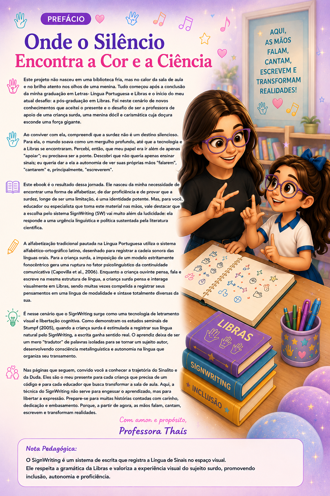
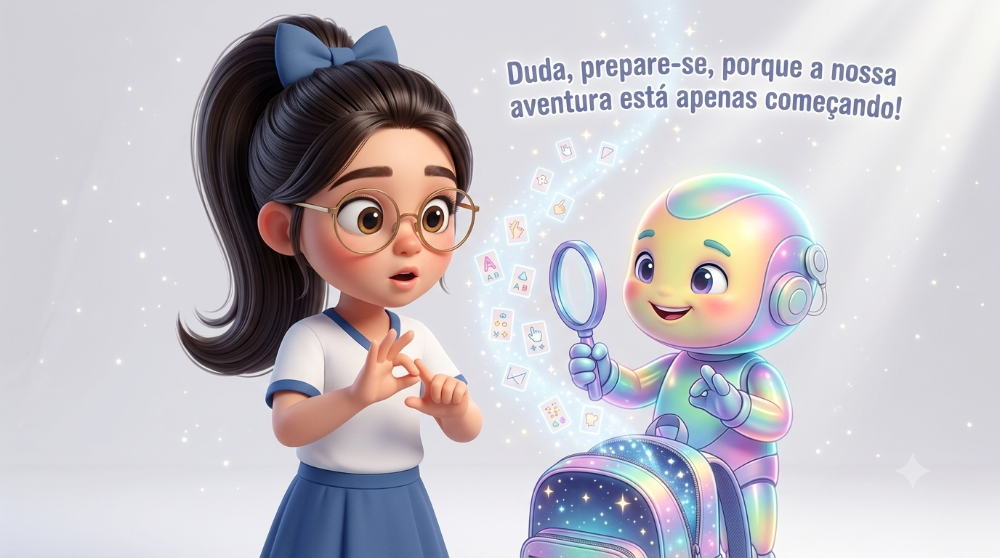
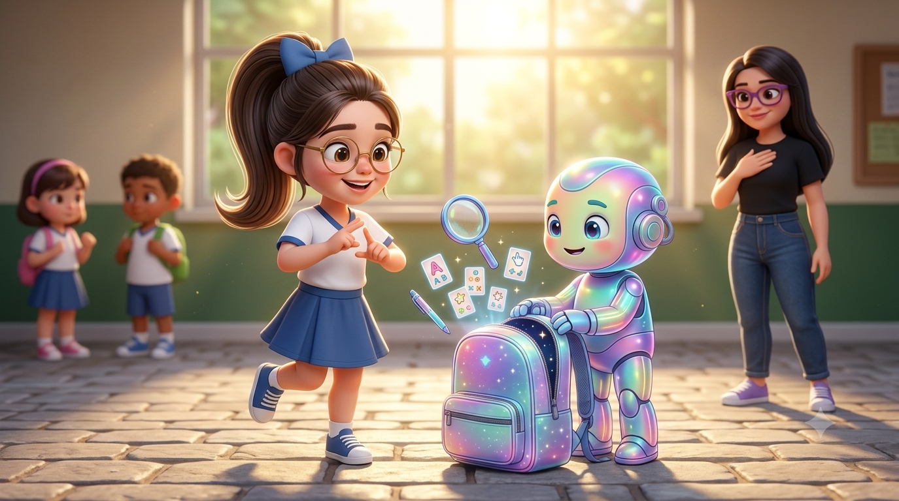
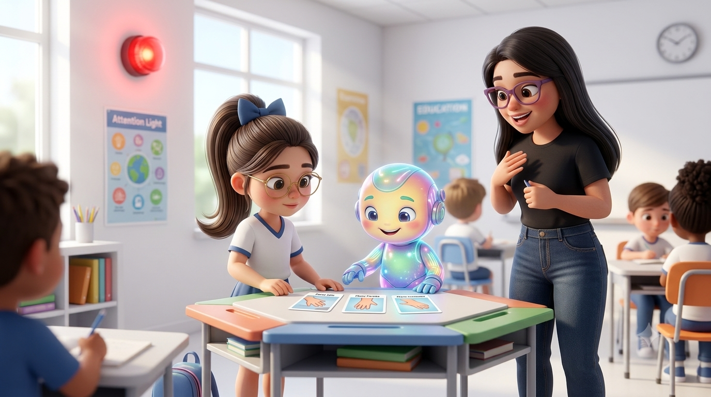
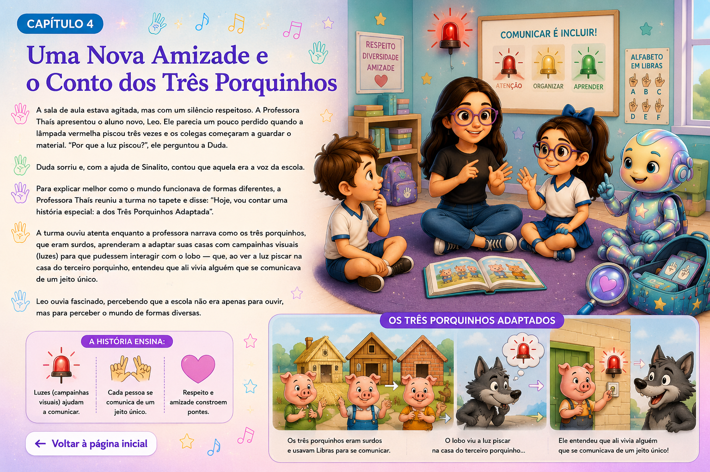
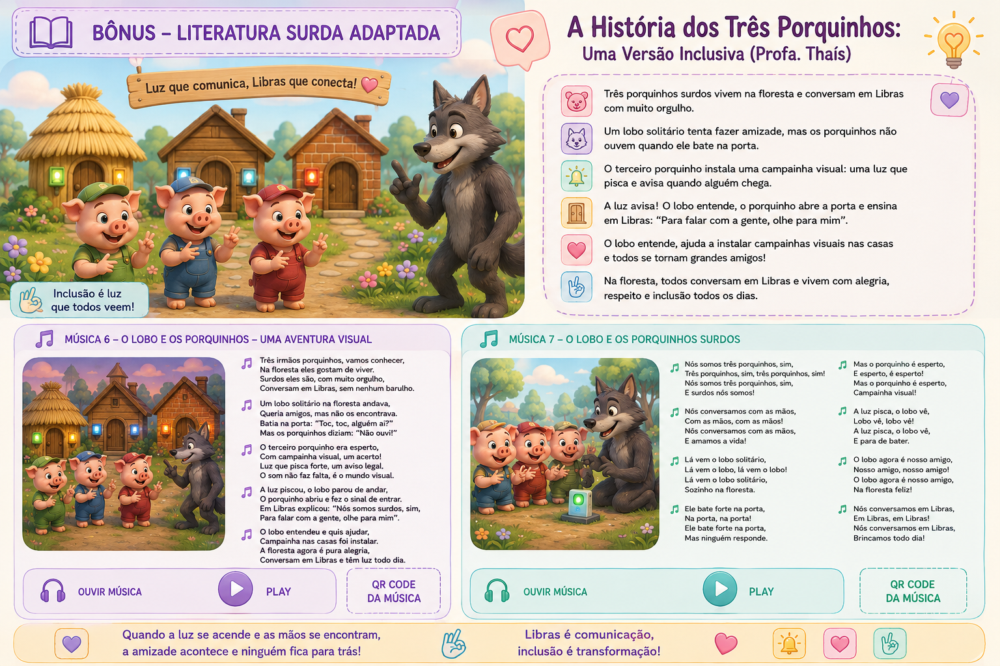
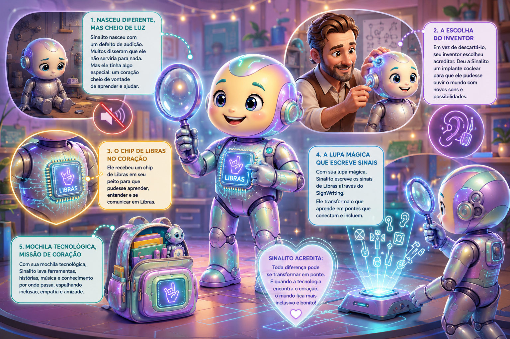

Onde o Silêncio Encontra a Cor e a Ciência
Este projeto nasceu no calor da sala de aula e no brilho atento nos olhos de uma menina. Aqui começa uma jornada em que Libras, tecnologia, histórias e SignWriting se encontram para mostrar que as mãos podem falar, cantar, escrever e transformar realidades.
Esta página é a extensão audiovisual do projeto. Cada história encontra uma música e cada conteúdo poderá futuramente receber sua interpretação em Libras.

A aventura das mãos
Duda encontra Sinalito e descobre que as mãos podem contar histórias e que o SignWriting pode registrar o movimento.

As mãos sabem falar
Na escola, Duda e Sinalito descobrem que os sinais podem ser registrados e guardados.

Olha pra Cá!
Os planos e a orientação das mãos ajudam Duda a compreender como o movimento ganha direção no papel.

Cada Jeito de Aprender
Leo chega à escola e aprende que existem diferentes formas de perceber, comunicar e participar.

Os Três Porquinhos
Uma versão inclusiva sobre acessibilidade visual, Libras, amizade e respeito às diferentes formas de perceber o mundo.

Sinalito, Luz do Coração
A origem de Sinalito e sua missão: transformar tecnologia, empatia, Libras e escrita visual em pontes.